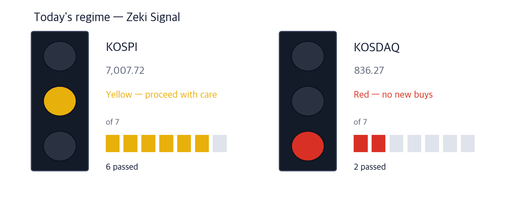
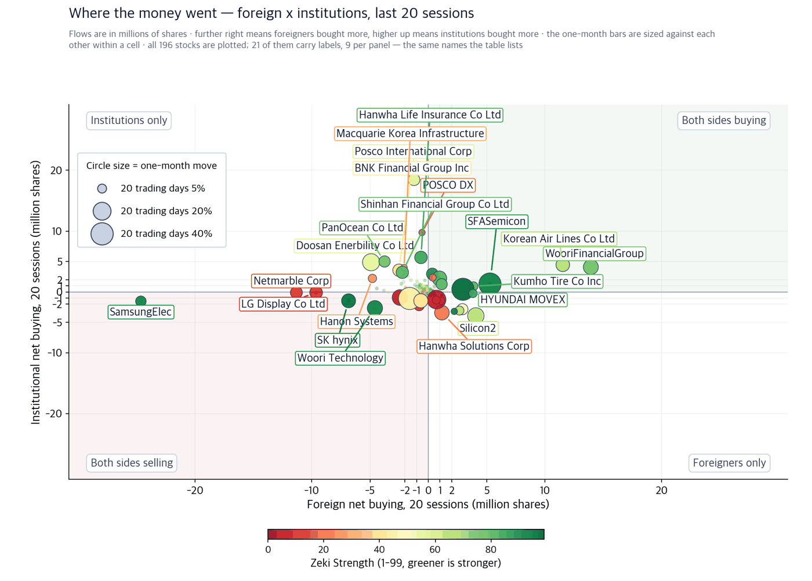
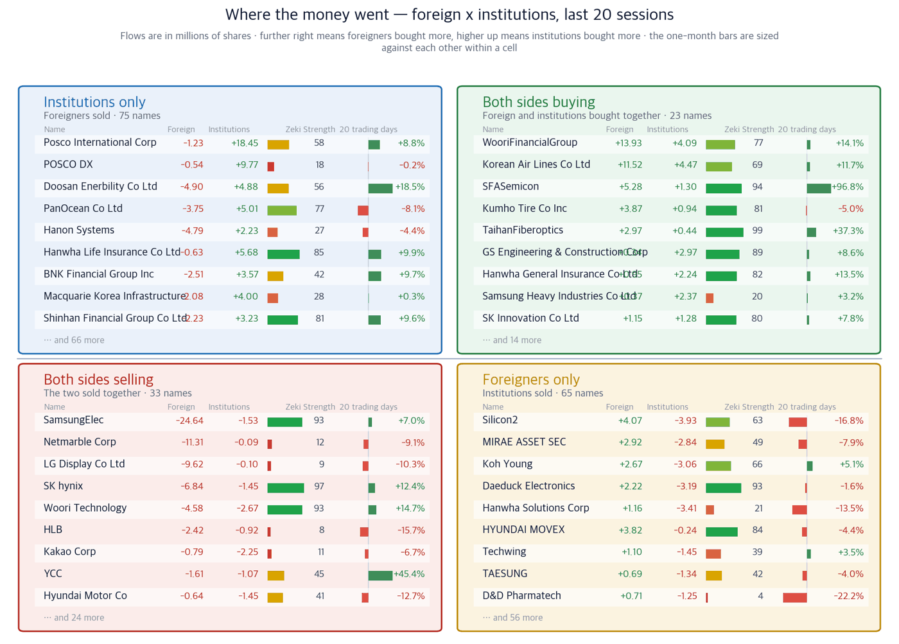

KOSPI 7,007.72 | KOSDAQ 836.27 | Nasdaq 27,122.09 | WTI $92.17 | Zeki Signal Yellow |

| Lit lamp | Today's regime. Green means buyers have the edge, yellow means wait, red means no new buys. |
| Filled squares | How many of the 7 conditions passed. More filled means firmer market structure. |
| All filled but not green | Something else pulled the grade down one step. The reason is printed under the lamp. |
The Zeki Signal reduces seven measures of the market's state to one light. Green means a buyable regime, yellow means proceed with care, red means no new buys. KOSPI passes six of seven but its trend measure is negative, so it is marked down one step to yellow. KOSDAQ passes two and is red.
Wait — the stance the light implies.
New York rose overnight. The Nasdaq composite closed up 2.26% at 27,122.09 and the S&P 500 up 1.49% at 7,764.70. The 10-year Treasury yield eased to 4.96%.
Here is what to do now, before the open.
① Crude fell 8% overnight and Seoul closed before it happened. Korea's market shuts at 15:30 local time; New York opens after that. West Texas Intermediate settled at $92.17, down 8.09%, and Brent at $96.22, down 7.36%. Both benchmarks fell together, so this is not a contract-roll artifact. This morning the first prices to separate will be the companies that buy oil and the companies that sell it.
② Oil and gas is the top-ranked sector on our board. On the 18 September close its median Zeki Strength was 90, the highest of 22 sectors. The crude price that held that ranking up fell 8% overnight. The ranking is built from past prices; the condition that produced them changed last night.
③ Some prices are rising for reasons that have nothing to do with oil. Multilayer ceramic capacitor (MLCC) prices are climbing. Samhwa Capacitor (001820) clears all four of our tests and is up 58.33% over 20 sessions. Its case rests on parts demand from AI servers, not on crude.
| Date | What to watch | What it changes |
|---|---|---|
| Tue 22 Sep | Trump addresses the UN General Assembly | An opening toward Iran takes crude down again. Refiners move first |
| Wed 23 Sep | Iran's President Pezeshkian addresses the UN | If the two actually meet, last night's 8% drop does not come back |
| Thu 24 Sep | Trump-Xi meeting begins in Washington | Rare earths and AI are on the agenda. Chips and materials feel it first |
The 22 September Korea Economic Daily international page reported that President Trump signalled he may meet Iran's President Pezeshkian at the UN. The same page carried his remark that military options remain open. The paper wrote down both forks; New York priced only one of them. Energy was the weakest US sector on Monday, and the reason given was rising hopes of US-Iran talks. (Korea Economic Daily 22 Sep · IBD 21 Sep)
Korea spent six months preparing for the opposite. Korea National Oil Corporation has run an oil-crisis unit since March, exercising priority purchase rights on jointly stored crude and introducing a crude swap with refiners. All of it was built for a rising price after a Hormuz disruption. That preparation was not wrong. It simply is not what moves prices this morning. (Korea Economic Daily 22 Sep)
Korean refiners are not US refiners. Gulf Coast plants take domestic crude by pipe; Korean plants buy Middle East crude by sea. A falling crude price marks down the inventory they already bought, and at the same time widens the refining margin. Two forces pull opposite ways, so we will not call the direction in advance. Where the volume goes this morning is the answer.
| Close | Day | Week | 20 sessions | 3 months | Zeki Strength | Off high |
|---|---|---|---|---|---|---|
| 153,900 KRW | +2.81% | +5.77% | +8.99% | +56.72% | 92 | -7.23% |
| Who | S-Oil, one of Korea's three refiners. |
| What | Refines Middle East crude bought by sea into diesel and gasoline. |
| When | Closed 21 September at 153,900 won, up 2.81%. Crude fell 8% after that close. |
| Where | Listed on the KOSPI market. Foreign ownership is 79.40%. |
| Why | A lower crude price means an inventory writedown and a wider refining margin at once. |
| How | Earnings turn on the gap between what it pays and what it sells for. |
| Close | Day | Week | 20 sessions | 3 months | Zeki Strength | Off high |
|---|---|---|---|---|---|---|
| 140,200 KRW | +2.34% | +4.71% | +7.76% | +48.52% | 80 | -8.66% |
| Who | SK Innovation, a refiner that also makes batteries. |
| What | Sells refined products and electric-vehicle batteries. |
| When | Closed 21 September at 140,200 won, up 2.34%. |
| Where | Listed on the KOSPI market. At 185.5bn won a day it is the most traded name here. |
| Why | Its refining arm meets the same condition as S-Oil's. |
| How | The battery arm makes its price steadier than a pure refiner's. |
The companies that buy fuel sit on the other side. For an airline, fuel is the largest single cost.
| Close | Day | Week | 20 sessions | 3 months | Zeki Strength | Off high |
|---|---|---|---|---|---|---|
| 29,050 KRW | -0.34% | -2.02% | +11.73% | -0.17% | 69 | -4.28% |
| Who | Korean Air, the country's largest carrier. |
| What | Buys fuel to carry passengers and freight. Fuel is its largest cost line. |
| When | Closed 21 September at 29,050 won, down 0.34%, but up 11.73% over 20 sessions. |
| Where | Listed on the KOSPI market. |
| Why | A lower crude price lowers the fuel bill and lifts profit. |
| How | Fuel reaches earnings over months, not in a single session. |
The 22 September Korea Economic Daily market page reported that multilayer ceramic capacitor prices are rising. These parts go into Nvidia's next AI server platform. Research firm TrendForce counts about 440,000 of them in one rack of the current platform and about 600,000 in the next one due in the second half — 30% more. (Korea Economic Daily 22 Sep)
The supply side is the heart of it. Japan's Murata told customers it will phase out some part numbers across nine product families. Samsung Electro-Mechanics said some products will not be restocked until August 2027. A new line takes 12 to 24 months to reach production. Prices are rising because supply is shrinking, not only because demand grew.
The largest move belonged to Samsung Electro-Mechanics, up 3.17% to 1,432,000 won on 21 September. We did not build a card for it: its trend measure is still below zero, our entry condition. It is turning up from a three-month fall of 28.29%, and we put a name on the page only after the turn is confirmed.
| Close | Day | Week | 20 sessions | 3 months | Zeki Strength | Off high |
|---|---|---|---|---|---|---|
| 146,300 KRW | +1.67% | +6.32% | +58.33% | +10.92% | 97 | -23.04% |
| Who | Samhwa Capacitor, a maker of commodity-grade MLCCs. |
| What | Supplies the ordinary-grade parts used in phones and computers. |
| When | Closed 21 September at 146,300 won, up 1.67%, and up 58.33% over 20 sessions. |
| Where | Listed on the KOSPI market, trading 152.8bn won a day. |
| Why | The leaders moved capacity to high-end AI server parts, leaving commodity grades short. |
| How | That shortage and the higher price land in this company's revenue. Consensus operating profit for this year is 29.9bn won, 91.78% above last year. |
| Name | ①up over 20 sessions | ②Strength 90+ | ③foreign net buy | ④institutional net buy | Met | Weight of evidence |
|---|---|---|---|---|---|---|
| Samhwa Capacitor(001820) | O | O | O | O | 4/4 | Well grounded |
| S-Oil(010950) | O | O | O | O | 4/4 | Well grounded |
| SK Innovation(096770) | O | X | O | O | 3/4 | Needs checking |
| Korean Air(003490) | O | X | O | O | 3/4 | Needs checking |
| Doosan Enerbility(034020) | O | X | X | O | 2/4 | Needs checking |
| KEPCO E&C(052690) | O | X | X | O | 2/4 | Needs checking |
The four columns are ①up over 20 sessions ②Zeki Strength 90 or better ③foreign net buying over 20 sessions ④institutional net buying over 20 sessions. The count of O marks sets the weight of evidence. No one picks it by hand.
Doosan Enerbility (034020) and KEPCO E&C (052690) clear two each. The 22 September paper reported Korea is negotiating a stake of around 7% in Westinghouse with the United States. The nuclear story is alive, but price and flow have not followed: foreign investors were net sellers of both over 20 sessions. A good article without the numbers behind it does not become a card.
The two charts below sort every name we follow by 20-session net buying from foreign investors and domestic institutions. The flow data ends 17 September, two sessions behind the prices.


| What this does not say | Flows and price move over the same period, side by side. What comes next: when foreigners and institutions buy, prices do rise for a day or two, then give it back — and the move is smaller than tax and commission. Trading on this picture loses money. Buy the day after you see both of them buying, and the odds of being up 20 sessions later are 48% — the same as picking at random (49%). We measured it on 503 stocks over 17 years. |
| Four panels | The two measures are each compared with a centre line. Top right cleared both, bottom left cleared neither, and the other two cleared one. Each panel's title is a plain sentence saying what that means. |
| The two middle columns | Where the two periods are compared. If they carry letters A-E, that is the standard scale this industry uses: A heavy buying, B buying, C an even split, D selling, E heavy selling (a rank of all names in fifths, so A is the top 20%). If they carry numbers, that is net buying over the period. |
| Nine per panel | The largest movers in that panel. The rest are counted at the foot of the panel. These same nine per panel are the names labelled on the scatter. |
| Month bar | Zero at the centre: right is up, left is down. Compare lengths within one panel only — each panel is scaled to itself. |
| Zeki Strength | A 1-99 rank. Longer and greener means the stock's price is stronger than the market. |
| Stock | Net shares, 20 days | RS | 20 trading days | As of |
|---|---|---|---|---|
| 316140 | +13,931,405 | 77 | +14.1% | 09-17 |
| 003490 | +11,524,964 | 69 | +11.7% | 09-17 |
| 036540 | +5,283,682 | 94 | +96.8% | 09-17 |
| 257720 | +4,073,723 | 63 | -16.8% | 09-17 |
| 073240 | +3,870,560 | 81 | -5.0% | 09-17 |
| Stock | Net shares, 20 days | RS | 20 trading days | As of |
|---|---|---|---|---|
| 005930 | -24,638,623 | 93 | +7.0% | 09-17 |
| 251270 | -11,309,618 | 12 | -9.1% | 09-17 |
| 034220 | -9,620,116 | 9 | -10.3% | 09-17 |
| 000660 | -6,835,070 | 97 | +12.4% | 09-17 |
| 034020 | -4,904,491 | 56 | +18.5% | 09-17 |
| Stock | Net shares, 20 days | RS | 20 trading days | As of |
|---|---|---|---|---|
| 047050 | +18,452,113 | 58 | +8.8% | 09-17 |
| 022100 | +9,771,730 | 18 | -0.2% | 09-17 |
| 088350 | +5,679,320 | 85 | +9.9% | 09-17 |
| 028670 | +5,007,944 | 77 | -8.1% | 09-17 |
| 034020 | +4,884,345 | 56 | +18.5% | 09-17 |
| Stock | Net shares, 20 days | RS | 20 trading days | As of |
|---|---|---|---|---|
| 257720 | -3,934,271 | 63 | -16.8% | 09-17 |
| 009830 | -3,411,350 | 21 | -13.5% | 09-17 |
| 353200 | -3,194,826 | 93 | -1.6% | 09-17 |
| 098460 | -3,059,110 | 66 | +5.1% | 09-17 |
| 006800 | -2,835,699 | 49 | -7.9% | 09-17 |
An article and a price can agree while the money does not. The table answers one question: did 21 September volume clear the volume to beat, its 50-day average?
| Name | 21 Sep volume | Volume to beat (50-day avg) | Cleared? | 20-session flow (to 17 Sep) | How to read it |
|---|---|---|---|---|---|
| Samhwa Capacitor(001820) | 1,207,859 | 841,872 | 1.43x cleared | foreign buying · institutions buying | Worth watching — price and volume agree |
| S-Oil(010950) | 336,267 | 423,010 | 0.79x did not clear | foreign buying · institutions buying | Hold off — flow buys but volume was thin |
| SK Innovation(096770) | 574,085 | 1,046,582 | 0.55x did not clear | foreign buying · institutions buying | Hold off — flow buys but volume was thin |
| Korean Air(003490) | 1,158,147 | 2,629,362 | 0.44x did not clear | foreign buying · institutions buying | Hold off — flow buys but volume was thin |
| Doosan Enerbility(034020) | 1,724,152 | 2,733,662 | 0.63x did not clear | foreign selling · institutions buying | Careful — foreign and institutional flows disagree |
| KEPCO E&C(052690) | 384,179 | 393,822 | 0.98x did not clear | foreign selling · institutions buying | Careful — foreign and institutional flows disagree |
| When | What to watch | What it means |
|---|---|---|
| First 30 minutes (09:00-09:30) | Do S-Oil and SK Innovation open up or down | Up means the market chose the refining margin; down means it chose the inventory loss |
| 10:00 | Does KOSPI hold 7,007.72 | That is yesterday's close, struck before crude fell |
| Last 30 minutes (15:00-15:30) | Does Samhwa Capacitor volume clear its 50-day average of 841,872 shares | Price without volume thins the case by one column |
Zeki Strength ranks a name's price performance against the 636 names we follow, on a 1-99 scale; 90 puts it in the top tenth. Weight of evidence is the count of the four columns a name clears. The foreign and institutional net-buying figures are disclosed by the Korea Exchange — they are not our calculation.
This digest starts from the newspaper, finds companies we do not own, measures their price and flow, and writes down what would confirm the case and what would break it.
Three dates: Trump at the UN on 22 September, Pezeshkian on 23 September, and the Trump-Xi meeting from 24 September. All three reach crude and chips.
This report is for information only and is not individual investment advice. ZekiRex™ Apex KR runs a rules-based simulated portfolio of 1 billion won — there is no real account, no order and no fill. The performance shown excludes commissions, taxes and slippage, and the price data omits companies that were delisted, which biases the result upward (survivorship bias). Past performance does not guarantee future results, and investing carries risk of loss of capital.
Sources — Korea Economic Daily print edition of 22 September, IBD (18 and 21 September), Korea Exchange flow disclosures, FinanceDataReader and Yahoo Finance prices. Prices are the 21 September close; flow data runs to 17 September. No sentences are reproduced from the paper; the facts are restated in our own words.
This is the Rex Way, ZekiRex™
| Weight of evidence | Names | Beat KOSPI | Winners led by | Losers trailed by | All averaged |
|---|---|---|---|---|---|
| Well grounded | 9 | 6 / 9 | +10.87%p | -3.73%p | +6.00%p |
| Grounded | 13 | 2 / 13 | +4.80%p | -4.34%p | -2.93%p |
| Needs checking | 20 | 6 / 20 | +4.32%p | -3.75%p | -1.33%p |
| No basis | 2 | 0 / 2 | — | -4.00%p | -4.00%p |
| Excluded | 1 | 0 / 1 | — | -1.32%p | -1.32%p |
| Well grounded 9 | +6.00%p | ||||||
| Grounded 13 | −2.93%p | ||||||
| Needs checking 20 | −1.33%p | ||||||
| No basis 2 | −4.00%p | ||||||
| Excluded 1 | −1.32%p |
The centre line is KOSPI. Right is ahead, left is behind. The grey number is how many names are in that band.
Of 9 Well grounded names, 6 beat KOSPI. Those 6 led by 10.9%p on average; the 3 that lost trailed by 3.7%p. All together: +6.0%p.
Toward the verdict. Across both markets, 24 of 60 cases have 5 trading days behind them. At 60 we run the test we fixed in advance, once, and print what it says. Until then the table above is interim.